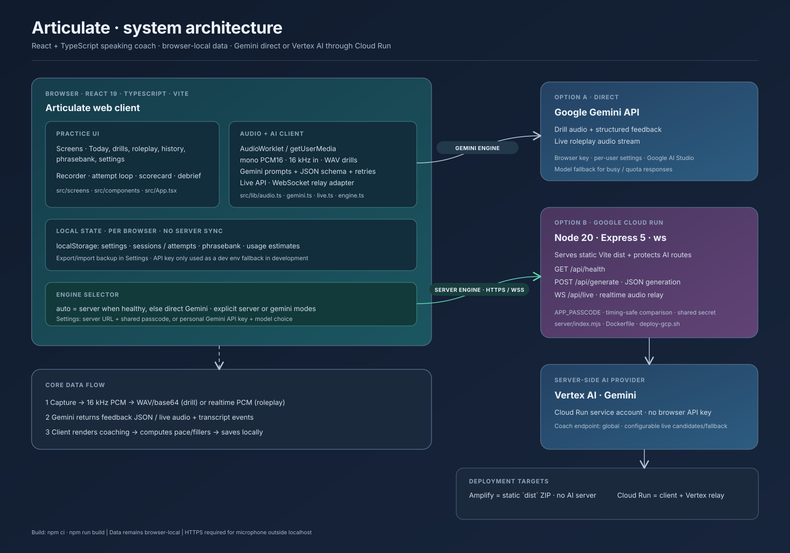

Browser client
React 19, TypeScript 5.8, Vite 6.3, browser audio APIs, WebSocket, and localStorage. The AI SDK is @google/genai 2.24.
A speaking-coach web app with two AI connection modes: direct Gemini from the browser, or a protected Cloud Run relay to Vertex AI. Practice history stays in the user’s browser.
The same React client supports a direct Gemini key and a Cloud Run server engine. In server mode, Cloud Run serves the built app and relays generation and live voice requests to Vertex AI using its service account.

React 19, TypeScript 5.8, Vite 6.3, browser audio APIs, WebSocket, and localStorage. The AI SDK is @google/genai 2.24.
Node 20+, Express 5, ws, and @google/genai. A single Cloud Run service can serve dist/ and relay Vertex AI requests.
AudioWorklet capture → mono 16 kHz signed PCM → WAV for drills; live roleplay streams PCM and plays model audio at 24 kHz.
Settings, sessions, phrasebank, and usage estimates are namespaced in browser localStorage. No account or server sync; Settings supports export/import.
| Path | What it owns |
|---|---|
src/App.tsx, src/main.tsx | React entry point, application shell, navigation. |
src/screens/, src/components/ | Practice screens and reusable recorder, scorecard, attempt, usage, and debrief UI. |
src/lib/audio.ts | Microphone access, AudioWorklet, downsampling, WAV encoding, PCM playback. |
src/lib/gemini.ts | Prompts, JSON response schema, model retry/fallback, error translation. |
src/lib/live.ts, src/lib/engine.ts | Shared live-session API; direct/server selection, health check, passcode and relay URL. |
src/lib/store.ts, pricing.ts | Local persistence, statistics, import/export, and estimated AI costs. |
src/lib/content.ts | Drill prompts, presets, roleplay personas. |
server/index.mjs, server/mock.mjs | Static server, HTTP generation API, authenticated WebSocket relay, mock provider. |
Dockerfile, deploy-gcp.sh, deploy-amplify.sh | Container and deployment workflows for Cloud Run and existing Amplify hosting. |
TakeRecorder stores chunks, encodes WAV, and sends base64 audio to analyzeSpeech. JSON feedback contains transcript, five scores, issues, word swaps, delivery, and one next fix. Word swaps feed the phrasebank.
Mic streams PCM through openLive. The client handles audio, transcript, interruptions, and completion events. Server relay tries the preferred Vertex live model and can fall back before response content begins.
Engine behavior: Settings offer auto, server, or gemini. Auto probes /api/health, choosing the server when reachable and otherwise using the personal Gemini key. Both generation paths share the same prompt and parsing code.
Server routes are protected by the shared APP_PASSCODE. Cloud Run service-account identity authenticates to Vertex AI; no browser API key is required in that mode.
GET /api/healthReturns service identity, passcode validity/configuration, coach location, and live model candidates. The client checks the passcode using x-app-passcode.
POST /api/generateRequires x-app-passcode and JSON { model, contents, config }. Returns generated text and usage metadata.
WS /api/liveAuthenticates the passcode in the upgrade query. Client events: start, audio, content, end. Server events: open, message, error, close.
| Environment setting | Purpose |
|---|---|
APP_PASSCODE | Required shared secret for protected AI routes. |
GOOGLE_CLOUD_PROJECT / GCLOUD_PROJECT | Vertex AI project identifier. |
COACH_LOCATION | Coach model location; defaults to global. |
LIVE_MODELS | Comma-separated fallback candidates, each model@location. |
PORT | Server listener; defaults to 8080. |
MOCK_AI=1 | Use local mock provider while developing the relay. |
.env.example documents VITE_GEMINI_API_KEY. The ignored .env.local fallback is read only in development. A production build does not embed it.
Direct Gemini key, server passcode, settings, recordings metadata, practice sessions, phrases, and usage estimates live in the browser. Export intentionally blanks the API key.
Keep .env.local, ZIP archives, node_modules, and dist out of Git. The root .gitignore excludes these paths.
npm ci npm run build npm run dev
npm run package:gcp produces a source archive. In Cloud Shell extract it, set the project, then run bash deploy-gcp.sh. It enables Cloud APIs, grants the default compute service account build and Vertex roles, then deploys to asia-south1 by default. Docker builds Vite and runs server/index.mjs.
npm run package builds dist and creates articulate-site.zip. deploy-amplify.sh uploads to an existing Amplify app using AWS CLI credentials. A separate Vertex server can be configured in Settings.
Microphone capture needs localhost or HTTPS. Cost displays are local estimates from usage metadata; use AI Studio or Cloud Billing for authoritative totals.
Add drill prompts and roleplay clients in src/lib/content.ts.
Change rubric, JSON schema, debrief prompt, and model fallbacks in src/lib/gemini.ts.
Update src/lib/types.ts and src/lib/store.ts; preserve settings defaults and defensive parsing for existing browser data.
Add Vertex routes in server/index.mjs and keep the direct/server interfaces aligned in src/lib/engine.ts and src/lib/live.ts.